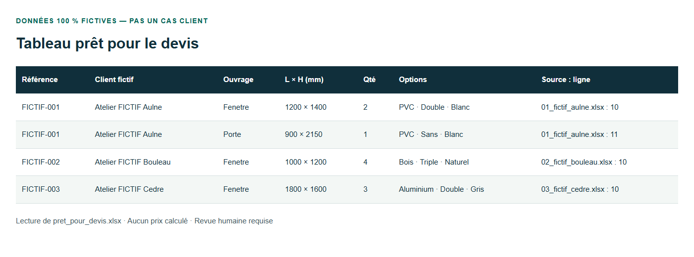
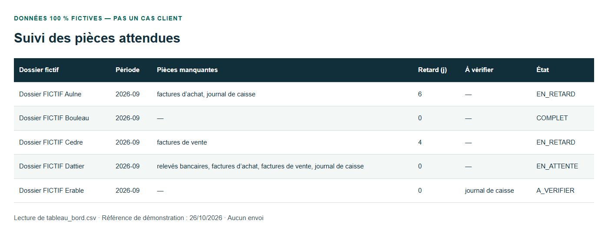

Avelor Labs Madagascar
Nous sommes une petite équipe à Madagascar qui accompagne les PME francophones sur leurs ressaisies et suivis administratifs, par l’automatisation des processus métier et le développement numérique sur mesure.
Une information déjà saisie ne devrait pas repartir de zéro
Un formulaire reçu, des données recopiées dans Excel, une pièce manquante à réclamer : le suivi se disperse entre fichiers et messages. Nous partons de ce passage concret pour examiner ce qui peut être simplifié, sans remplacer systématiquement vos outils.
Deux offres, selon votre besoin
Automatisation des processus métier Relier des étapes répétitives, préparer un tableau ou organiser des rappels selon des règles définies avec vous, en conservant les contrôles nécessaires.
Développement numérique sur mesure Créer un site, une application ou un logiciel adapté à votre activité quand vos outils actuels ne répondent pas au besoin.
Comment on travaille
- Échange de 15 minutes : vous décrivez vos outils, votre difficulté et le résultat attendu.
- Étude par notre responsable technique : il examine vos contraintes et la faisabilité.
- Proposition écrite : périmètre, livrables, conditions et prix sont précisés avant votre accord.
- Réalisation : nous construisons la solution convenue et vérifions le résultat avec vous.
Démo : formulaire Excel → tableau prêt pour le devis
Un prototype local lit des formulaires Excel fictifs, rassemble les lignes valides et signale les demandes à corriger. Le fichier et la ligne d’origine restent repérables.
Données fictives, pas un cas client. Aucun prix n’est calculé : le tableau prépare une revue humaine avant chiffrage.


Une seconde démo suit les pièces attendues de plusieurs dossiers, repère celles qui manquent et prépare pour chacun un projet de relance précis, à valider avant tout envoi.


Qui nous sommes
Une équipe à Antananarivo : Tino, fondateur, coordonne les échanges et les projets ; notre responsable technique étudie les besoins et les solutions.
Décrivez-nous l’étape que vous ressaisissez
Pour un premier échange : avelorlabsmg@gmail.com · +261 38 19 673 56.
Mentions légales
AVELOR LABS SARLU — RCS 2026 B 01362 · Lot VT 47 EC, Ambohipo, Antananarivo, Madagascar.